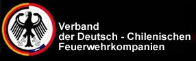
Anualmente la Confederación efectúa una convención que reúne a numerosos delegados y que nos permite analizar administrativa y técnicamente la labor que efectuamos y conocer las experiencias de nuestros camaradas. La Confederación de Compañías Chileno–Alemanas es respetuosa de la institucionalidad establecida por la Junta Nacional de Cuerpos de Bomberos de Chile, respalda su trabajo y colabora en las tareas que institucionalmente ella dispone.
Actualmente la Confederación es dirigida por un directorio nacional, compuesto por voluntarios elegidos de las 18 compañías confederadas a nivel nacional. El directorio actual, es el siguiente :
| Directorio Confederación de Compañías Chileno-Alemanas de Bomberos |
| Presidente de la Confederación – Sr. Tomás Erber Rodolph |
| Vice Presidentes de la confederación – Sr. Luis Rigo-Righi Aubel – Sr. Marco Marín Negrín – Sr. Vinicio Contreras |
| Secretario de la confederación – Sr. Eduardo Poehls Bustos |
| Tesorero de la Confederación – Sr. Jorge Tapia Castillo |
| Pdte. Comisión Técnica – Sr. Cristian Riquelme Guerraty |
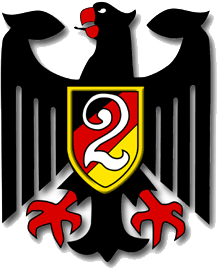
2ª «Germania» de Valparaíso
Fundada el 30 de junio de 1851
Blanco 630, Valparaíso
Sitio web
1ª «Germania» de Valdivia
Fundada el 1 de marzo de 1852
Los Lingues 530, Valdivia

2ª «Germania» de Puerto Montt
Fundada el 19 de junio de 1865
San Felipe s/n, Puerto Montt
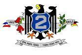
2ª «Germania» de Osorno
Fundada el 27 de agosto de 1865
O’Higgins 909, Osorno
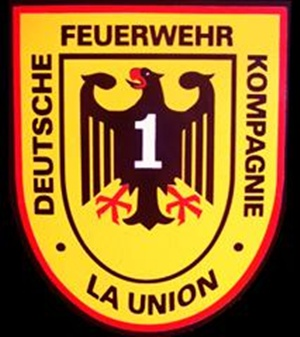
1ª «Germania» de La Unión
Fundada el 3 de octubre de 1869
Letelier 287, La Unión
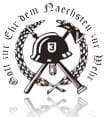
3ª «Germania» de Temuco
Fundada el 25 de junio de 1899
Prieto 450, Temuco
Sitio web
3ª «Bomba Alemana» de Punta Arenas
Fundada el 19 de enero de 1901
Av. Eduardo Frei Montalva 0983, Punta Arenas
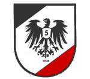
5ª «Bomba Chile» de Talcahuano
Fundada el 29 de enero de 1908
Avenida Río Maule 5383, Talcahuano
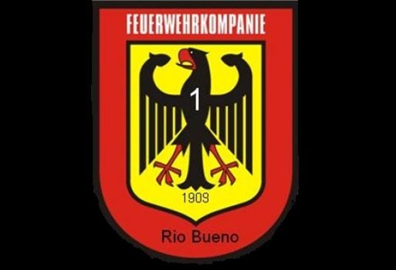
1ª «Germania» de Río Bueno
Fundada el 9 de junio de 1909
Independencia 1145, Río Bueno

2ª «Germania» de Puerto Varas
Fundada el 5 de marzo de 1911
San Francisco 601, Puerto Varas
Sitio web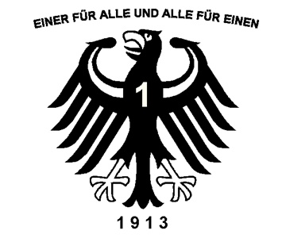
1ª «Germania» de Frutillar
Fundada el 10 de agosto de 1913
Avenida Philippi 1065, Frutillar
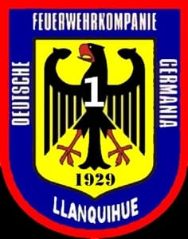
1ª «Germania» de Llanquihue
Fundada el 4 de agosto de 1929
Baquedano 1001, Llanquihue
Sitio web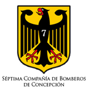
7ª «Bernhardt Eunom Philippi» de Concepción
Fundada el 7 de septiembre de 1949
Veteranos del 79 s/n, Concepción

15ª «Máximo Humbser» de Santiago
Fundada el 29 de octubre de 1958
Avenida Apoquindo 8115, Santiago
1ª «Vicente Pérez Rosales» de Las Cascadas
Fundada el 27 de febrero de 1960
Las Cascadas s/n, Las Cascadas
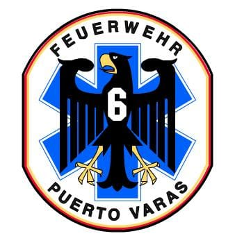
6ª «Puerto Chico» de Puerto Varas
Fundada el 18 de febrero de 1981
Avenida Errázuriz s/n, Puerto Varas
Sitio web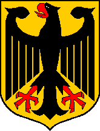
4ª «Faja Maisan» de Pitrufquén
Fundada el 26 de septiembre de 1981
Faja Maisan s/n, Pitrufquén
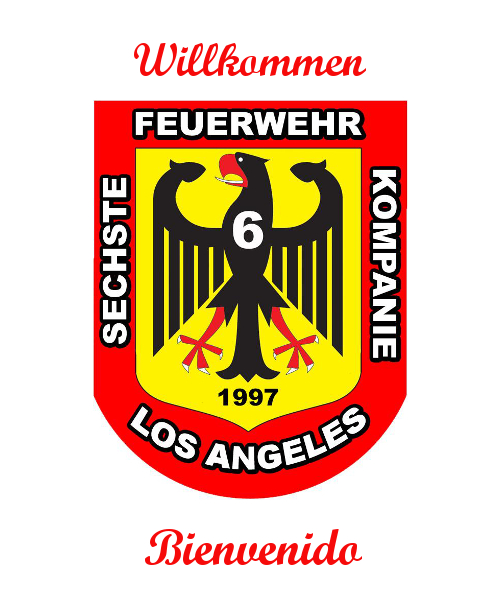
6ª «Chileno Alemana» de Los Ángeles
Fundada el 14 de marzo de 1997
Avenida Gabriela Mistral 1560, Los Ángeles